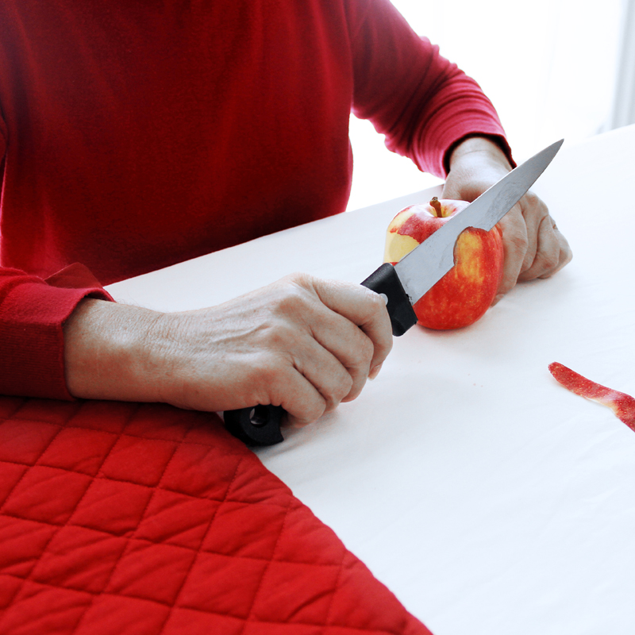

- 

La mise en scène m’intéresse énormément, grâce à elle je travaille sur la narration.
J’aime produire de l’étrangeté avec du réel et composer des mises en scènes mystérieuses sans tomber dans la fictionalisation.
J’ai imaginé deux personnages, à l’heure d’un repas.
J’ai figé cet instant du quotidien et j’ai commencé avec très peu d’éléments à créer une scène avec des indices sur l’état psychologique de mon personnage.
Couper les visages renvoi en terme de lecture à une idée de ne pas donner d’identité, laisser au spectateur la possibilité d’y mettre l’identité qu’il souhaite.
Comme dans un rêve où on ne voit pas les visages, ne pas avoir l’identité nous perturbe un peu plus, et crée ainsi une sorte de frustration.
Je veux un résultat improbable, imaginaire avec un décalage avec la réalité.
Mes photographies sont narratives mais on ne sait pas ce qu’elles racontent, Est ce que c’est du réel est ce que c’est de la fiction ?
Je cherche à fabriquer ce fil suspendu qui navigue dans mes images et amener le spectateur vers ces éléments là.
J’ai imaginé un personnage, qui réalise des taches troublantes en pleine nuit.
Comme sortit d’un polar, il a des postures rigides et nous donnent l’impression que l’instant a été délibérément fixé, comme dans une scène de film.
Ces instants narratifs ont des actions sont maintenues dans un état perpétuel de suspension.
Dans cette série on peut y voir le fait divers mais je ne suis pas sur cette thématique, sur cette question, mais je veux travailler plus généralement sur un résultat d’image qui veut traiter l’ambiguïté.
La place de l’imaginaire du spectateur est très importante.
Les peu d’éléments présents, les indices, nous permettent de nous retrouver libre d’interpréter plusieurs lectures et interprétations.
Toujours anonymes, sans l’expression du visage, c’est le corps qui parle.
Le personnage est capturé et se retrouve coincé dans un espace temps entre la réalité et la fiction.
Un corps est confronté à sa relation à l’espace. Je les pousse grâce à la surexposition jusqu’à l’abstraction.
Je me suis intéressé à la question de la perte de la perception d’un lieu et comment grâce à l’outil photographique je peux jouer avec lui en lui donnant que très peu d’indices.
J’ai réalisé deux séries. La première série, mes premières recherches, est travail plus graphique, le corps suit les lignes, comme s’il ne lui resté plus que ça à faire dans cet espace.
Les autres photos sont dans une esthétique plus cinématographique. Une personne est seule, nous ne savons pas ce qui a pu se passer.
Une certaine ambiguïté commence à émerger dans mon travail. La surexposition accentue la notion surréaliste, de rêve que j’exploite dans la suite de mon processus.